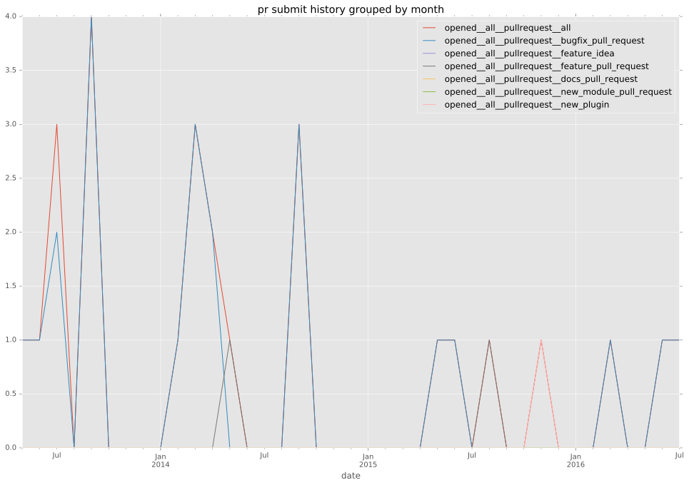
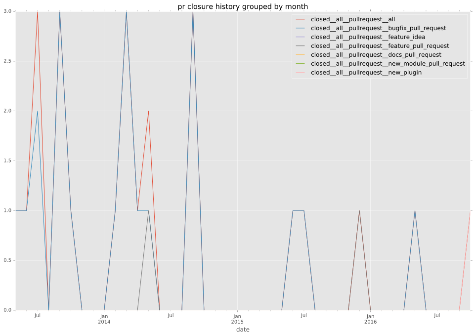
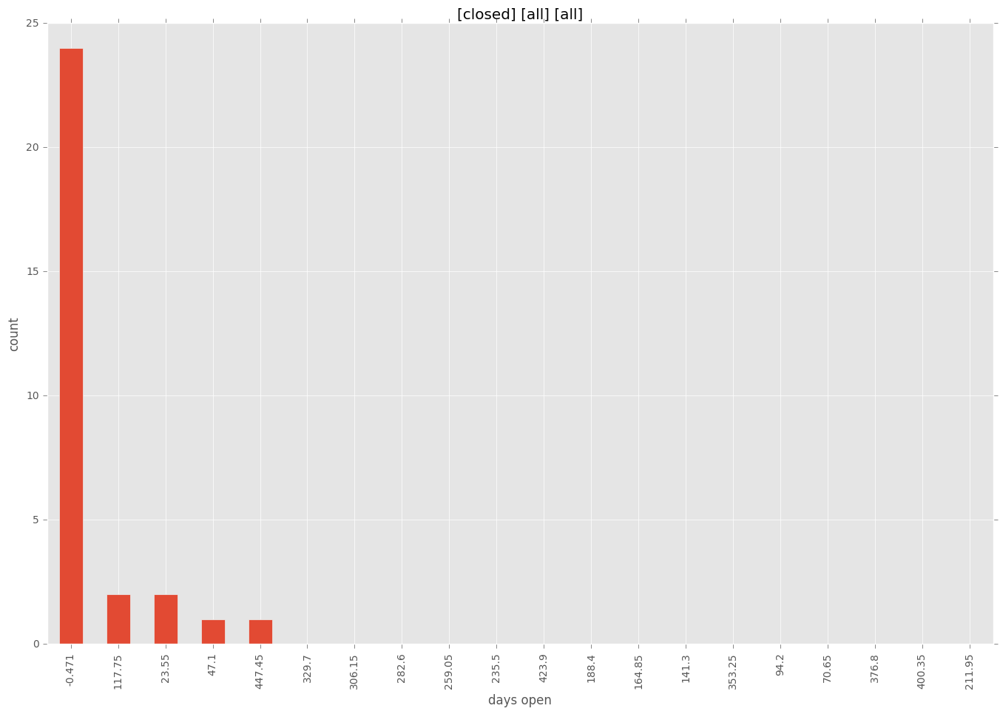
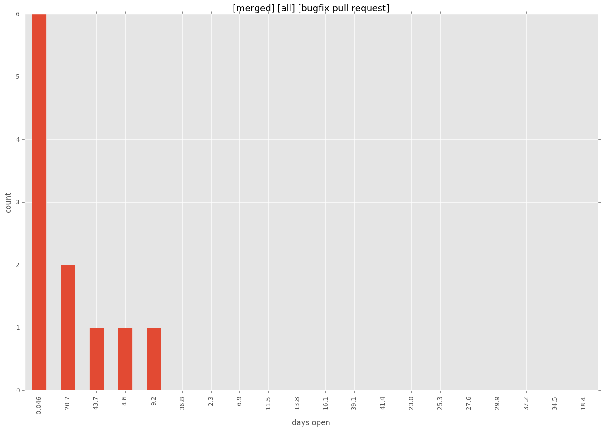
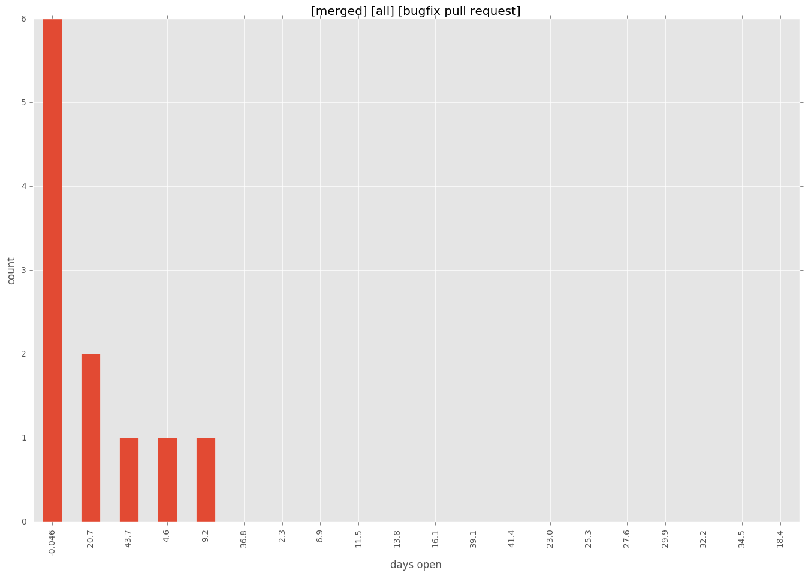

authors
- dstoflet
maintainers
- brian-brazil
- dstoflet
contributors
- rghunter : 1 commits
- wimnat : 2 commits
- bcoca : 1 commits
- jpmens : 1 commits
- dstoflet : 22 commits
- LorenzoLuconi : 2 commits
- brian-brazil : 19 commits
- jctanner : 2 commits
- gaqzi : 20 commits
- jimi-c : 1 commits
total issue counts
unknown: 1
feature pull request: 2
pullrequest: 27
bugfix pull request: 24
feature idea: 1
issue: 10
bug report: 9
issue history
pullrequest history


days open by issue type
bugfix pull request
count: 33
std: 15.2393778208
min: 0
max: 57
median: 0.0
mean: 8.36363636364
all
count: 43
std: 77.8358866409
min: 0
max: 471
median: 0.0
mean: 27.8372093023
pullrequest
count: 0
std: nan
min: nan
max: nan
median: nan
mean: nan
feature pull request
count: 4
std: 76.7875858022
min: 0
max: 133
median: 66.5
mean: 66.5
feature idea
count: 0
std: nan
min: nan
max: nan
median: nan
mean: nan
issue
count: 0
std: nan
min: nan
max: nan
median: nan
mean: nan
bug report
count: 5
std: 198.350195362
min: 0
max: 471
median: 42.0
mean: 130.6
closures grouped by total days open


 
